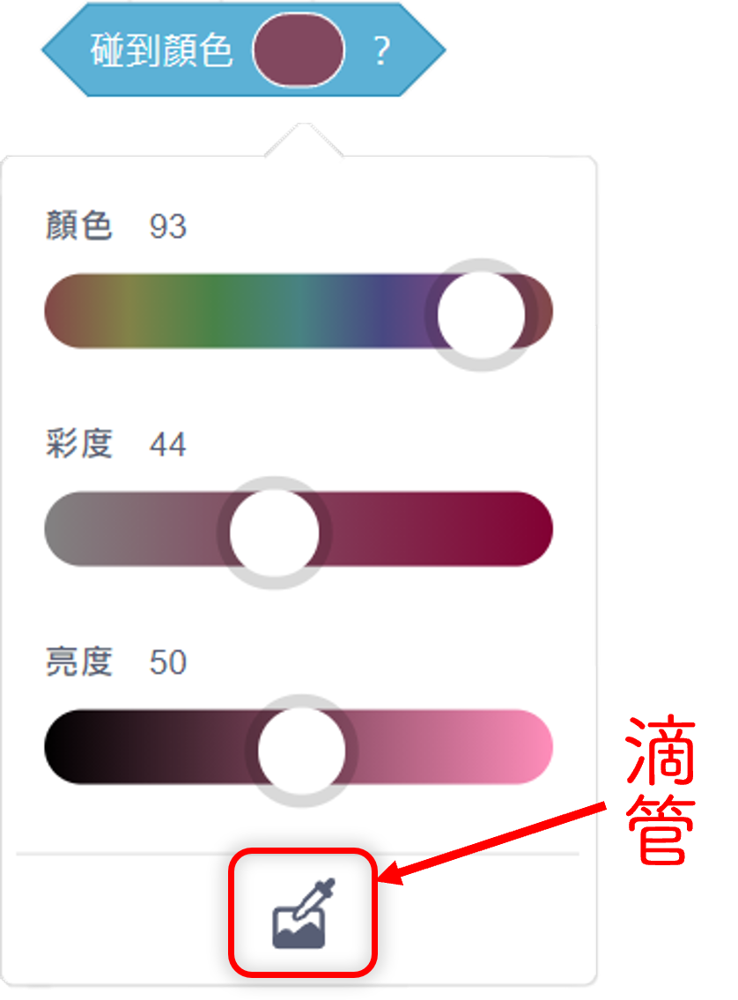

筆跡顏色設為[ |
設定筆跡顏色 |
|---|
| 類別 | 畫筆類 | 形狀 | 堆疊 | 適用 | 角色 |

〈設定筆跡顏色〉積木是〔畫筆類〕〖堆疊狀〗積木。
有一個可嵌入顏色輸入類型之圓矩形參數框。用來設定筆跡的顏色。
可以用來將筆跡的顏色設定為指定的顏色。
- 透過單擊參數框中的顏色方塊，從彈出的「顏色選擇面板」中選擇顏色(如圖)。
- 可以透過滑桿來選擇設定筆跡的『顏色』、顏色的『彩度』及顏色的『亮度』。
- 可以透過「顏色拾取」，利用滴管放大鏡選擇舞臺上任何顏色區域作為依據，再進行參數調整。
- 可以嵌入有代表 ARGB 格式顏色的數字類型之〖回報值〗積木。
- Scratch裡的顏色由顏色（色相）（Hue）、彩度（飽和度）（Saturation）和亮度（明度）（Brightness）三個指標決定。每個指標都以0-100之間的數字來設定，最後調整之數值就可以得到一個獨特的顏色。這種顏色模式被稱為HSB顏色模式，這種顏色模式較符合人的視覺感受，讓人覺得更加直觀一些
- 〈清除筆跡積木〉可以將全部的畫筆筆跡清除，但無法只清除部分筆跡。可透過將畫筆顏色設定與背景顏色相同，來消除筆跡顏色（此方法只能在背景色是單一顏色時使用）